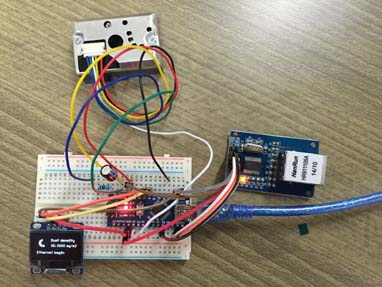
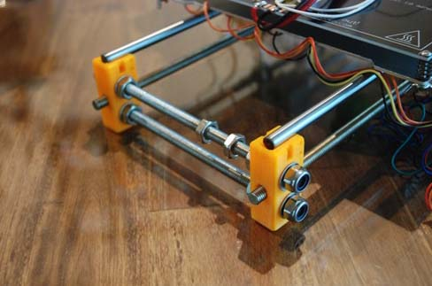
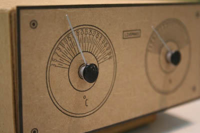

단순한 로봇, 온습도계, 동작 감지기,
음악 및 사운드 장치, 스마트 홈 구현, 유아 장난감 및 로봇 교육 프로그램 등의 다양한 제품들이
아두이노를 기반으로 개발 가능하다.
다음 사진은 아두이노를 활용하여 만든 것들이다.

미세먼지 측정기를 만들었다.
어떻게 만들 수 있는지 볼 수 있다.

아두이노 메가로 만들 수 있는 3D프린터이다.
역시 어떻게 만들 수 있는지 볼 수 있다.

아날로그 온습도계이다.
탁상용으로 놓고 쓰기 좋다.
링크 걸어놓겠다.
아두이노는 회로가 오픈소스로 공개되어 있으므로
누구나 직접 보드를 만들고 수정할 수 있다.